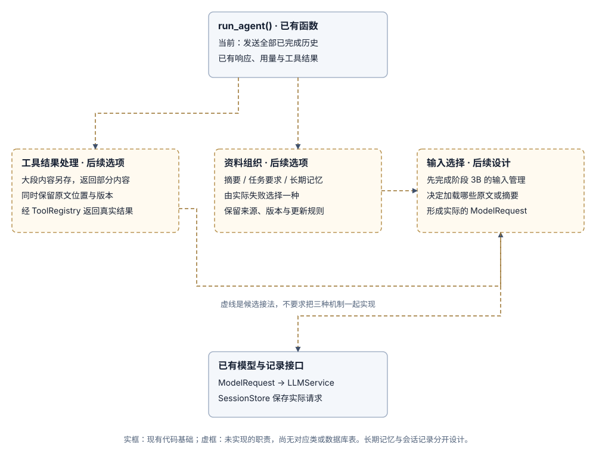

阶段 4：根据真实失败选择长任务机制
根据任务中遇到的问题选择一种方法，无需先把摘要、检索和记忆全部实现。
1. 建立基线
固定任务、资料、模型配置和验收条件，记录遗漏、用量、延迟与失败。
2. 选择机制
工具结果过大时，先尝试只显示部分内容，并提供原文链接；裁剪历史导致早先的要求丢失时，考虑单独保存任务要求或生成摘要；材料较多时考虑检索；跨会话复用时再考虑长期记忆。
3. 实现与比较
3.1 现有代码基础与候选关系图
本阶段尚未实现摘要、检索或长期记忆。现有基础是 run_agent()、ToolRegistry 与 ModelRequest / ModelResponse。Runner 只保留本次任务消息；会话记录仍待实现。

3.2 选择一种机制后，再落实调用过程
- 用现有 CLI 固定任务与资料，查询 3A 保存的请求、响应与工具结果，定位是资料缺失、内容过多还是较早要求被省略。用量取自模型响应；延迟比较需另行测量。
- 若选择结果预览，在工具生成结果时提供可重新读取的原文位置；若选择摘要或检索，新增对应的资料处理职责，并保留来源与版本。只实现本次要比较的一种方案。
- 在未来 3B 的输入选择步骤加载所需原文、摘要或检索结果，明确预算和失败行为，再得到实际
ModelRequest。 - 沿现有 Runner 调用模型并保存结果，使用相同任务比较遗漏、用量和耗时，再决定是否保留新机制。
3.3 表结构现状与后续存储选择
当前没有会话数据库、摘要、文档分块或长期记忆表。工具结果只进入本次内存消息；先按3A设计持久材料，再按实际失败决定是否增加摘要或检索。
后续若选摘要，需要设计原文引用、版本与更新方式；若选检索，需要设计资料 ID、分块、索引及删除同步；若选长期记忆，需要设计适用范围、来源和更正规则。可以使用文件、SQLite 或独立索引服务；尚未选择方案，因此本页不预先定义这些表的字段。实现时把真实字段与关联补在这里。
3.4 比较要求
为输入保留来源、版本、包含与省略清单。每次只尝试一种方法，用相同任务比较改进效果和新增问题。
4. 验收
能解释模型实际看到了什么，说明错误来自哪里、怎样更正或删除记忆，并记录尚未解决的问题。